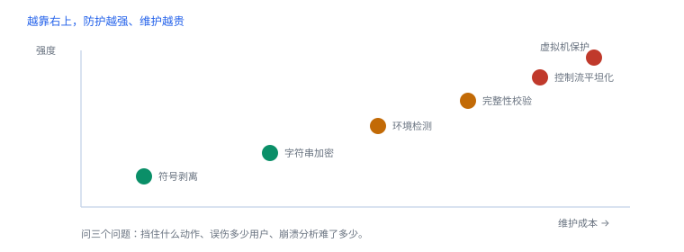

加固结构与代价
加固买的是时间，代价是可维护性与崩溃分析能力
判断一项加固值不值，只看三件事：挡住了什么具体动作、误伤了多少正常用户、让崩溃分析难了多少。三项都能量化，讨论才不会落到“更安全”这种空话。
1. 七类手段
| 手段 | 作用 | 分析者看到的特征 |
|---|---|---|
| 符号剥离 | 去掉函数名与调试信息 | 符号表近空，字符串仍在 |
| 字符串加密 | 隐藏接口与提示 | 解密桩 + 常量数组 |
| 名称混淆 | 类名方法名随机化 | 符号有但语义不可读 |
| 控制流平坦化 | 打散分支 | 大循环 + 状态分派 |
| 反调试 | 阻碍附加 | 启动早期查询调试状态 |
| 完整性校验 | 发现代码被改 | 读自身文件、算哈希、比对 |
| 环境检测 | 识别异常设备 | 路径、scheme、进程探测 |
2. 代价：维护、误报与分析成本
| 手段 | 维护成本 | 崩溃分析影响 | 误报风险 |
|---|---|---|---|
| 符号剥离 | 低 | 高（只剩偏移） | 无 |
| 字符串加密 | 中 | 中（日志不可读） | 无 |
| 平坦化 | 高 | 高（行号失真） | 无 |
| 反调试 | 中 | 中（调试构建需例外） | 中 |
| 完整性校验 | 中 | 高（误判直接退出） | 高 |
| 环境检测 | 中 | 低 | 高 |

3. 观测特征
分析者看到的解密桩（示意）
static void decode(char *buf, size_t len, uint8_t key) {
for (size_t i = 0; i < len; i++) buf[i] ^= key;
}
// 调用点：常量数组 + 长度 + 密钥；部分实现返回前清零这类桩有两个可抓的特征：被调用次数极多、参数里带常量地址。抓住调用点就能批量还原字符串，算法本身并不重要。
4. 评估流程
- 列出每项手段能挡住的具体动作（不是“提高安全性”）。
- 测正常用户路径上的误报，尤其企业设备与测试机。
- 评估失效后果：某一项被绕过，剩下还能做什么。
- 记录崩溃分析成本：符号化难度、行号可靠性。
常见误区
把“检测到异常”当成“拒绝服务”。更稳妥的分级是：上报 → 限制高风险操作 → 才考虑阻断。
把“检测到异常”当成“拒绝服务”。更稳妥的分级是：上报 → 限制高风险操作 → 才考虑阻断。
5. 强度与可维护性
| 组合 | 防护强度 | 维护负担 | 建议 |
|---|---|---|---|
| 仅符号剥离 | 低 | 无 | 发布默认 |
| 字符串加密 + 环境检测 | 中 | 中 | 多数应用够用 |
| 再加平坦化 | 中高 | 高 | 只对核心算法局部使用 |
| 全量虚拟机保护 | 高 | 很高 | 仅高价值算法，且需专项维护 |
6. 失败分流
| 现象 | 原因 | 查哪里 |
|---|---|---|
| 线上崩溃无法定位 | 符号剥离 + 平坦化 | 保留符号归档、按 UUID 匹配 |
| 正常用户被拦 | 环境检测误报 | 分级响应、白名单 |
| 更新后大面积崩溃 | 完整性校验与热修冲突 | 校验范围与更新流程 |
| 加固后性能下降 | 解密/校验在热路径 | 缓存结果、移出主线程 |
7. 数据细节：加固的强度梯度
| 组合 | 对抗成本 | 维护成本 |
|---|---|---|
| 符号剥离 | 低 | 无 |
| 字符串加密 + 环境检测 | 中 | 中 |
| 再加控制流平坦化 | 中高 | 高 |
| 虚拟机保护 | 高 | 很高 |
8. 一次真实排查记录：线上崩溃无法定位
- 现象：崩溃报告只有地址，没有函数名。
- 先查符号：符号文件是否归档，UUID 是否匹配。
- 再看加固：平坦化会让行号失真，回溯可信度下降。
- 补证据：在关键路径埋点，用日志替代栈。
- 结论与限制：记录“加固导致可观测性下降”，并注明这是可预期的代价。
9. 自测
- 为什么“符号剥离”对崩溃分析的影响比对逆向更大？
- 字符串解密桩的两个可抓特征是什么？
- 完整性校验为什么容易误报？
- “检测到异常就退出”有什么问题？